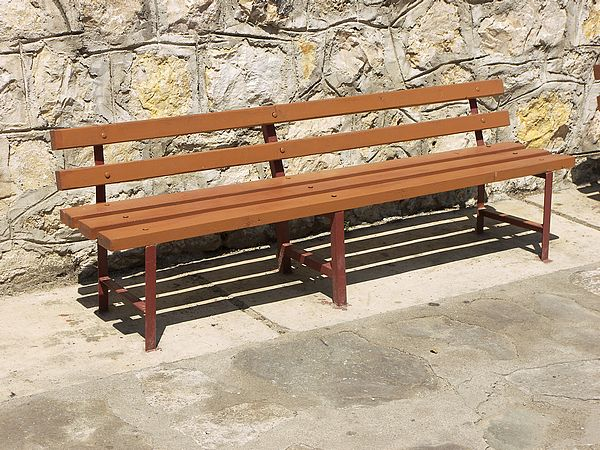
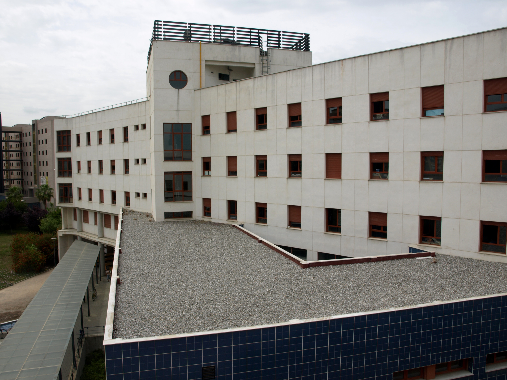
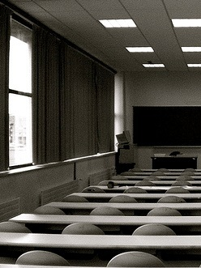
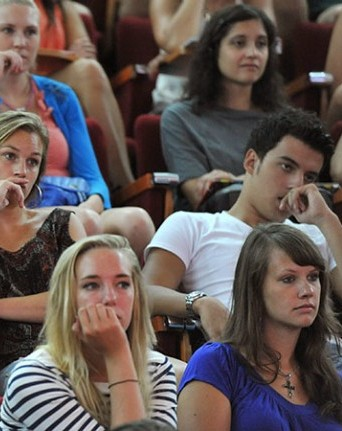
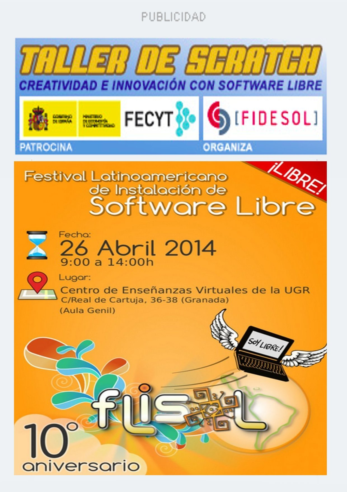

El misterio de los bancos
Aunque desde la dirección aseguran que sólo se trata de un
pequeño retraso en la instalación varios estudiantes aseguran haber
visto como los profesores meriendan sentados en ellos.

Banco de la entrada principal
02-04-2014Fraude en Londres
"Hemos sido victimas de una oferta de trabajo engañosa donde se nos prometió un
salario que no era real y al que se aplicaron sucesivas reducciones hasta convertirse
en el mínimo que la legistlación inglesa permitía."
05-04-2014Fiesta en la escuela
Sumándose a la famosa fiesta de la primavera, los estudiantes
de la ETSIIT la hacen a su manera. El resultado no podía
ser distinto, 100kg de basura recogida por el servicio de limpieza.
Estado del suelo a la mañana siguiente.
02-04-2014El misterio de los bancos
Aunque desde la dirección aseguran que sólo se trata de un
pequeño retraso en la instalación varios estudiantes aseguran haber
visto como los profesores meriendan sentados en ellos.
Leer más...02-04-2014
El misterio de los bancos
Aunque desde la dirección aseguran que sólo se trata de un
pequeño retraso en la instalación varios estudiantes aseguran haber
visto como los profesores meriendan sentados en ellos.
Leer más...

Banco de la entrada principal
02-04-2014
El misterio de los bancos
Aunque desde la dirección aseguran que sólo se trata de un
pequeño retraso en la instalación varios estudiantes aseguran haber
visto como los profesores meriendan sentados en ellos.
Leer más...
Banco de la entrada principal
02-04-2014
Vuelven los erasmus borrachos
fasfjañlsfjñlaskdjfñalsdj5f ñas6dlkjfdsñalkfj dsa
fdsaflkdsajflsakjf ñldsakf
asdfsdalfjsdalkfjldsafjldsaj
fasdlfjsadlkfjsdalkfjsadlkfjs. Eso nos
dijo antes de vomitar.
Leer más...02-03-2014
Exámenes a la vuelta de la esquina
Dejando atrás la Semana Santa de poco descanso para la mayoría
empieza la cuenta atrás para los exámenes de junio. Nervios, café y
complejos vitamínicos pueden ser el peor aliado de los estudiantes
que cada vez se planifican peor.
Leer más...

Aula 1.3, donde se realizan muchos exámenes.
12-03-2014
Vuelven los erasmus borrachos
fasfjañlsfjñlaskdjfñalsdjf ñasdlkjfdsñalkfj dsa
fdsaflkdsajflsakjf ñldsakf
asdfsdalfjsdalkfjldsafjlds. Eso nos
dijo antes de vomitar.
Leer más...12-03-2014
Erasmus
Dejando atrás la Semana Santa de poco descanso para la mayoría
empieza la cuenta atrás para los exámenes de junio. Nervios, café y
complejos vitamínicos pueden ser el peor aliado de los estudiantes
que cada vez se planifican peor.
Leer más...

Aula 1.3, donde se realizan muchos exámenes.
12-03-2014
noticia flash!
Delegacion General
Los incidentes ocurridos en peridodo de alteración de matrícula
hacen perder los nervios al personal de administración.
"El sistema inormático es un desastre" -Maria Ester- Coordinadora
General
Leer más...12-03-2014
noticia flash!
Becas para erasmus
Una nueva inyección económica hace posible que la beca Erasmus
llegue a 50 estudiantes más. Europa del este y Estados Unidos los
principales objetivos de nuestra fuga de cerebros temporal.
Leer más...12-03-2014
